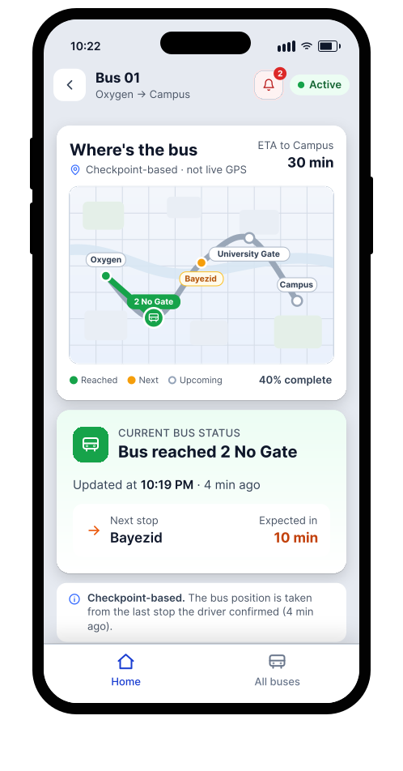
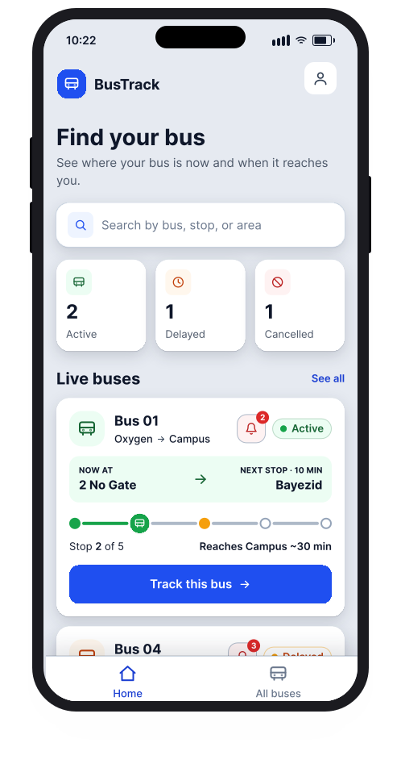
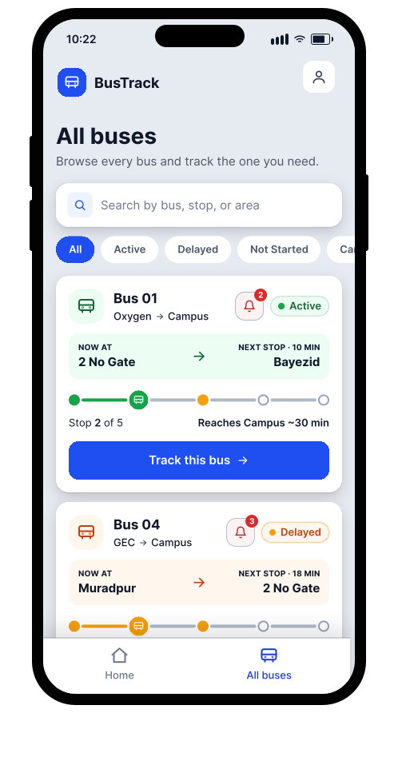
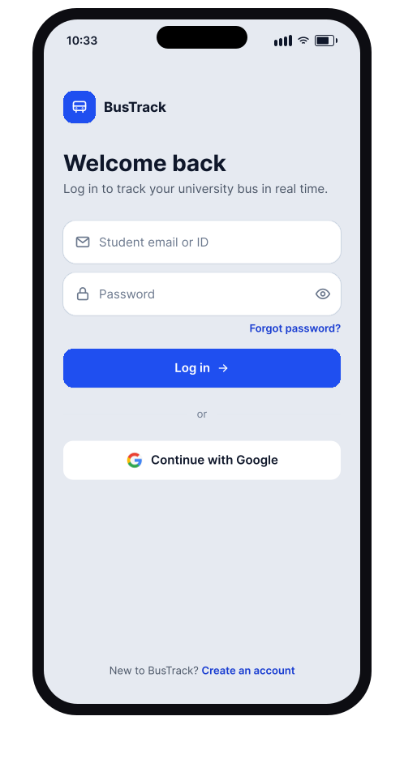
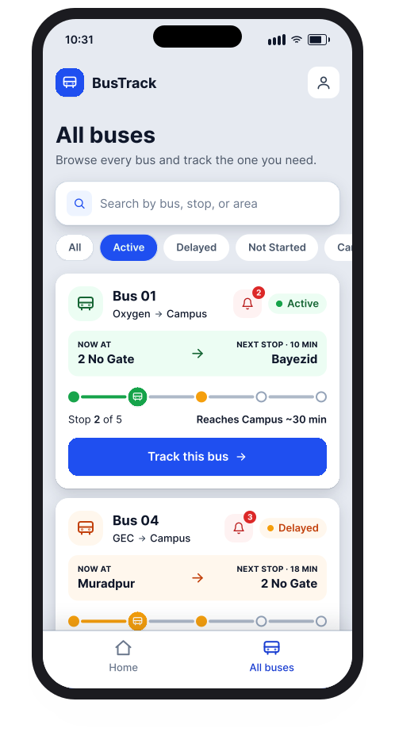
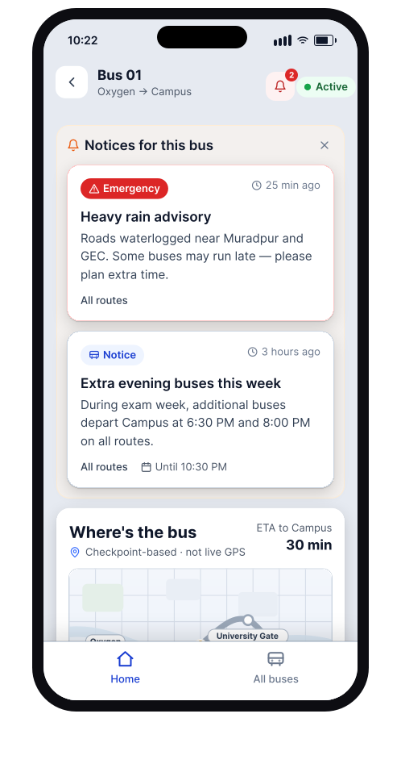

Knowing where your campus bus is — built for places where the buses have no GPS and the drivers don’t carry smartphones.



For students who depend on the university bus, the day starts with the same blind guess. There’s no signal, no screen, no way to see what the bus is doing — so you stand at the stop and hope.
Has the bus even started today?
Where is it right now?
Did it already pass my stop?
Is it running late?
Should I wait — or find another ride?
Is the trip cancelled today?
Today the only “tracking system” is a phone call — to a friend already on the bus, the driver, or a helper. Most mornings you just wait, and guess.
The obvious fix is live GPS tracking. But BusTrack is built for universities in places like Bangladesh, where most drivers don’t carry smartphones or keep steady internet on their phones. So a map with a moving dot quietly falls apart before it even starts.
Most buses simply don’t have a tracking device fitted, and retrofitting the whole fleet is expensive.
Drivers may not carry a smartphone, or use one reliably enough to run a live-location app all day.
Mobile data and coverage can’t be counted on for a steady stream of GPS pings along the route.
The solution has to be cheap to build and cheap to run — or it never reaches the students who need it.
A GPS-first app would look perfect in a demo and fail on the road. So the design had to start from what actually exists.
Instead of asking where exactly is the bus, BusTrack asks something cheaper and more honest: where was it last seen? Every trip the bus passes the same known points (2 No Gate, Bayezid, University Gate). As the bus reaches each one, the driver reports it with a quick USSD code on any basic phone, and the whole live status is built from that, no GPS or internet required.
The backend that makes this work is a USSD Gateway-Based Bus Location Update System. USSD runs on the plain mobile network, so it needs no smartphone, no internet and almost nothing to operate, which is exactly what these campuses can afford. The trade-off is that true live tracking isn’t possible, so on the front end my job was to make the last-seen information feel clear and reassuring, so a student always understands where their bus is even without a moving dot on a map.
A dot sliding along a map, updated every few seconds.
“Reached 2 No Gate 5 min ago. Next stop Bayezid. ~30 min to Campus.”
The hardest part wasn’t the map — it was making an estimate feel trustworthy instead of fake. So the bus-status screen is built to be upfront about what it knows.
It labels itself “Checkpoint-based · not live GPS”, stamps every update with how long ago the last stop was confirmed, and turns the route into three plain states — reached, next, and upcoming — so a glance answers “did it pass me yet?” A short note even explains where the position comes from. The student always knows it’s an estimate, and exactly how fresh it is.
Everything in the app answers one of the morning’s questions — quickly, and without needing a perfect signal.
A checkpoint progress bar, the next stop, and an estimated arrival to campus — the closest thing to live, without GPS.
See how many buses are active, delayed, or cancelled, and browse every route with quick filters to find the one you need.
Rain advisories, cancellations and extra exam-week buses surface right on the bus, so no one waits on a trip that isn’t running.
No GPS, low data, light to operate — designed so a real university could actually afford to switch it on.
BusTrack isn’t a live GPS map. Instead it shows every bus’s status at a glance, so a student can spot theirs fast, follow it checkpoint by checkpoint, and get a heads-up if anything unusual happens on that route.



BusTrack is a self-initiated project I’m taking from idea to working product — the UI, the front-end, and the checkpoint logic behind it. It’s in progress, not a finished retrospective, and the design keeps sharpening as I build it out.
Starting from the real constraints — no GPS, no smartphones, little data — led to a product that could actually ship, not just demo.
Showing an approximate position, clearly labelled and time-stamped, beats a confident dot that’s quietly wrong.
Owning both the design and the build keeps the gap between what I intend and what ships close to zero.